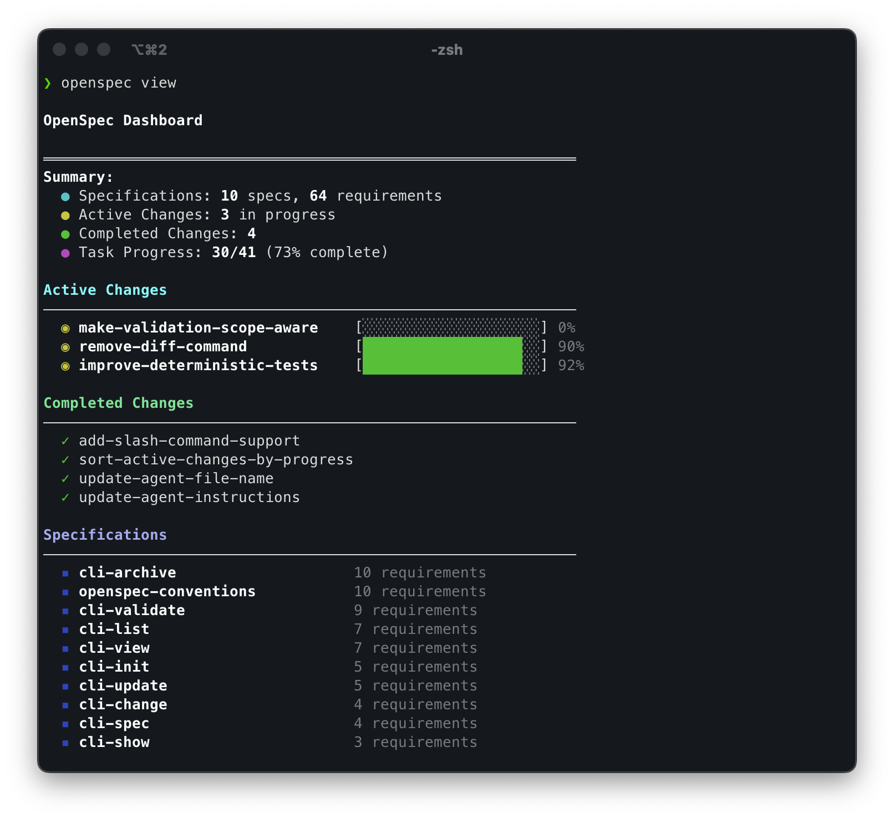

演示
三步完成一个完整变更
OpenSpec 简化了从想法到实现再到归档的完整开发流程
You: /opsx:propose add-dark-mode
AI: 已创建 openspec/changes/add-dark-mode/
✓ proposal.md — 为什么做、做什么
✓ specs/ — 需求与验收场景
✓ design.md — 技术实现方案
✓ tasks.md — 实现任务清单
准备开始实现！
You: /opsx:apply
AI: 正在实现各项任务...
✓ 1.1 创建主题上下文 Provider
✓ 1.2 创建主题切换组件
✓ 2.1 添加 CSS 变量
✓ 2.2 接入 localStorage
所有任务完成！
You: /opsx:archive
AI: 已归档至 openspec/changes/archive/2026-03-10-add-dark-mode/
✓ 规范已更新。准备好下一个功能！
OpenSpec 控制台

价值
为什么选择 OpenSpec？
AI 编码助手功能强大，但当需求只存在于聊天记录中时，结果往往难以预测
先对齐再编码
人与 AI 在写代码前先就规范达成共识，避免方向性偏差带来的大量返工
井然有序
每个变更都有独立文件夹，包含提案、规范、设计和任务四个产物，清晰可查
流动灵活
随时更新任意产物，无需遵守僵化的阶段门控，按自己的节奏推进
工具生态广泛
通过 Slash 命令支持 20+ AI 助手，包括 Claude Code、Cursor、Windsurf 等主流工具
与同类产品对比
vs. Spec Kit (GitHub)
Spec Kit 全面但重量级，有严格阶段门控、大量 Markdown 文件、Python 环境依赖。OpenSpec 更轻量，让你自由迭代。
vs. Kiro (AWS)
Kiro 功能强大但锁定在其 IDE 内，且仅限 Claude 模型。OpenSpec 支持你现有的全部工具。
vs. 不用规范
没有规范的 AI 编码意味着模糊提示和不可预测的结果。OpenSpec 在不增加繁文缛节的前提下带来可预测性。